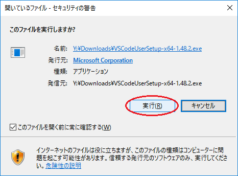
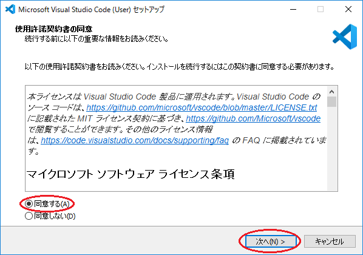
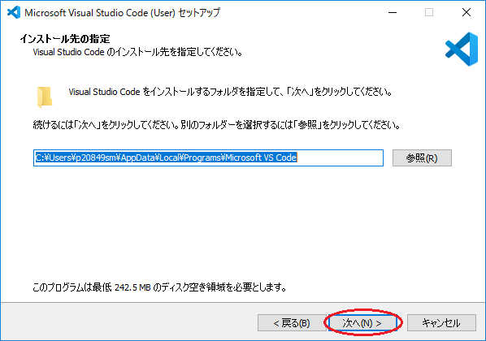
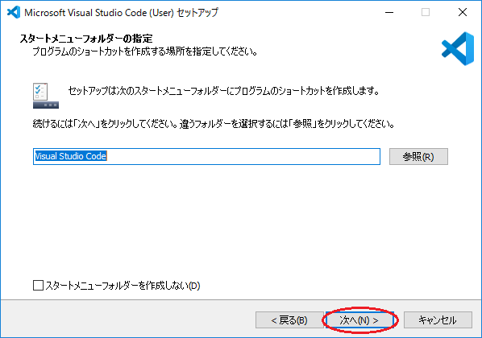
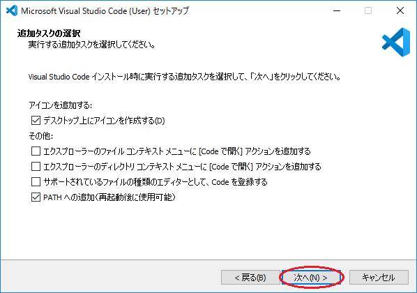
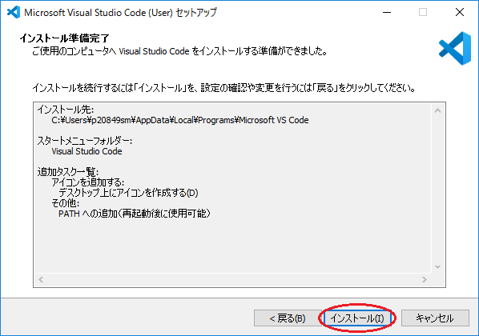
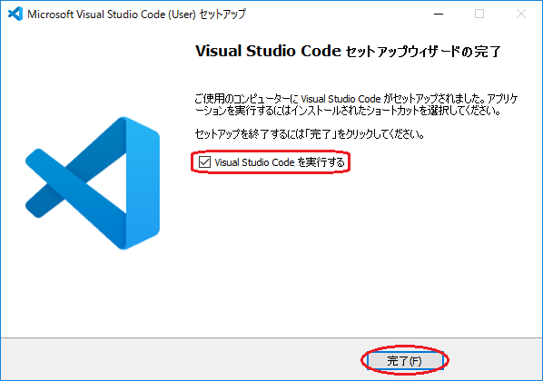

Visual Studio Code のインストール
この文書は，Visual Studio Code（略称 VS Code）と呼ばれるテキストエディタのインストール方法について記述したもので，
自宅等でインストールする際の参考として用いることを想定している．（基本的に Windows でインストールする場合を想定して
記述している．他の OS の場合も同じような手順となるが，必要に応じて適宜読み替えていただきたい．）
CSLドメインのPC（教室のPC）には，この VS Code があらかじめインストールされているため，この文書のような手順を踏む必要はないが，
初めて使用する際には，「Visual Studio Code の日本語化と初期設定」に従って
日本語化と初期設定をしておくこと．
A. インストーラーのダウンロード
- ブラウザで「Visual Studio Code」を検索し，microsoft の VS Code のページ
（https://azure.microsoft.com/ja-jp/products/visual-studio-code/）を開く．
- Visual Studio Code のページで，「VS Code をダウンロードする」をクリックする．
- OS に合わせて，適切なインストーラーを選択してクリックする．Windows版は User Installer でよいが，
x64, ARM のいずれかを選択してダウンロードする．どれを選ぶべきかは，使用している Windows のシステムの種類を調べればよい．
（調べ方）
B. インストーラーの実行
※ 以下，若干変更されている可能性もあるが，基本的な流れは変わらないはず．
- ダウンロードしたインストーラーを実行する．

- 「使用許諾契約書の同意」に同意して「同意する」を選択して「次へ」をクリックする．

- インストール先を指定する．特に事情がなければ，
そのまま変更せずに「次へ」をクリックする．

- スタートメニューフォルダーを指定する．これも特に事情がなければ，
そのまま変更せずに「次へ」をクリックする．

- 「追加タスクの選択」は好みで選択してよい．よく判らなければ変更しなくてもよい．
「次へ」をクリックする．

- インストール内容を確認して「インストール」をクリックする．

- 引き続き Visual Studio Code の初期設定をする場合は，
「Visual Studio Code を実行する」にチェックを入れて，「完了」をクリックする．

- 最初の起動時には，「Visual Studio Code の日本語化と初期設定」に従って
日本語化と初期設定をしておくとよい．
C.〔補足〕Windows のシステムの種類の調べ方
- デスクトップ、またはエクスプローラーの「PC」を右クリックして、
メニューから「プロパティ」を選ぶと、コンピューターの基本的な情報が表示される。
その中から「システムの種類」を見ればよい。
{kind=link}
{kind=link}
{kind=link}
{kind=link}
{kind=link}